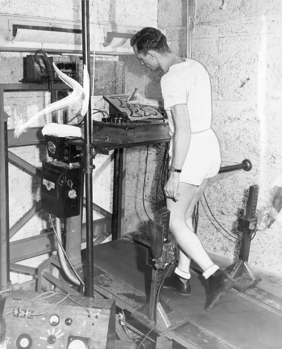

Fitness, whether in the pursuit of physical excellence as well as health improvement, is not a modern innovation.While today’s fitness influencers, proclaimed gurus, and industry experts believe in modern fitness equipment, workout programs, and fitness environments started with them – the story is much earlier than today’s fitness leaders. As the writer, Marcel Proust, so eloquently stated back in the early 1800s, " What we call our future is the shadow our past casts in front of us." In essence, the fitness industry of 2019, and what it will become, is simply our fitness shadows coming back to life. This article concentrates on 15 innovations of equipment whose shadows still hover around us today.
Fitness equipment, or what we may call fitness training accessories, has a long history that dates back to 800 B.C. Numerous advancements in exercise equipment throughout the past 2,800+ years have altered how athletes, fitness buffs, and ordinary people trained and led active lifestyles. The list of 15 fitness equipment breakthroughs that came about and had an impact that is still felt today are provided below.
The oldest dumbbells were made by Greek trainers and athletes between 800 and 700 B.C. to improve athletic performance.The earliest interactions of the dumbbell, known as halters, were composed of stone. Halteres were created in a range of sizes to offer athletes different levels of resistance. In addition to sprinting and general resistance training, Greek athletes utilized halters for lunges, plyometric jumps, and other training exercises. These simple dumbbells developed over time, changing from being constructed of wood in the 1700s to having a steel handle connecting two globes filled with iron shot. By the turn of the 20th century, barbells and dumbbells with steel bars that could be loaded with plates had been developed by Alan Calvert, the inventor of Milo Barbell. Even though modern dumbbells have improved over earlier models, they are still comparable to the ones that were invented approximately 3,000 years ago.

The first medicine ball was invented by Hippocrates, the creator of the Hippocratic Oath, around 300 B.C. This was comprised of animal skin wrapped around a sand-filled interior and was used by athletes and fitness enthusiasts for lifting, carrying and throwing. Today’s medicine balls, slam balls, sand bells and sandbags, are all modern imitations of the original medicine ball.
Fast forward to the early 1700s, when Russians invented the kettlebell, or "girya", to show off their skill in local sporting competitions. The kettlebell soon became an essential training accessory for strength athletes seeking to enhance their physical prowess. The majority of kettlebells used today are not far removed from the originals used by Russian strongmen.
In the 1700s, about the same time the Kettlebell was introduced, fitness practitioners introduced the "wand". This weighted wooden stick was similar to today’s weighted bars, only heavier. The wand soon gave way to the barbell, which was comprised of either wooden sticks or metal bars with weights attached. By the mid-1800s barbells had evolved, comprised of a metal handle with globes on each end, filled with steel shot. These early "barbells" required total body control and engagement of the core. The first plate-loaded barbells, which are the standard today, were introduced around 1902 by Milo Barbell company.
The Indian Club, introduced to the British military by native soldiers in India during the early 1800s, became a mainstay of physical training among the British military, and later among many global athletes. In 1834, Donald Walker - author of British Manly Exercise- introduced Indian Club exercises to the general male population as a mainstream form of fitness training. In 1866, the seminal textbook for Indian Club training was authored by Sim Kehoe. Today, the RMT club and ONNIT steel clubs offered by Roque are modernized conversions of these original training devices.
The first iteration of today’s variable resistance equipment was introduced in the mid-1800s by Dudley Sargent , a Harvard professor. His machines were called variable-resistance pulley machines. By the late 1880s, Dudley Sargent had created 56 different variable-resistance pulley machines with names such as the abdominal pulley system, the chest pulley system, and the back pulley system. By the time he retired from Harvard he had created 56 machines, all housed in Harvard’s Hemenway Gymnasium. Many of his pulley systems became mainstays for early fitness facilities around the globe.
Around the same time, Dudley Sargent was creating his variable resistance machines, Swedish physician Gustav Zander created his progressive resistance machines by employing weights, pulleys, levers, springs, and cams (similar to what the original Nautilus machines had). In total, Gustav Zander created 27 different machines designed to be used for rehabilitative and performance enhancement purposes. The underlying principle behind his machines was what he called progressive exertion, whereby the load placed on the targeted muscles increased throughout the movement. Zander’s progressive resistance machines never really caught on with the public, but they re-emerged with the introduction of Nautilus machines in 1970. Arthur Jones’ introduction of the Nautilus represents the second stage in the evolution of variable resistance machines, offering progressive resistance via a modified cam system. One could argue that the early Nautilus machines were merely an innovative twist to Zander’s machines, some of which used cam-like pulley mechanisms. Today, there are many variable resistance models in existence, including Nautilus, with roots that go back to the first machines of Sargent and Zander.
Up until the 1800s, most cardiovascular training involved walking, cycling and running. In 1871, William B. Curtis introduced the Curtis rowing machine, which became the first piece of cardiovascular equipment designed solely for indoor training purposes. Curtis was an avid rower. As one of the founding members of the New York Athletic Club, which opened in 1868, he developed the rowing machine so individuals could train year-round no matter where they lived. The Curtis Rowing machine used a flywheel and ratchet system, subsequently becoming a template for future rowing machines, including those currently used in clubs and studios around the world.
As early as the late 1800s, the thought of engaging in cardiovascular activity indoors or on a piece of equipment was nothing short of crazy, or possibly torture. In the 1870s, Nicholas Potter received three separate patents for treadmills collectively referenced as "enterprise dog power." The first patent, which came in 1871, applied to the pivoting track frame. In 1875, the second patent was received for the system used to elevate the platform, followed by a third patent for an adjustable and removable track frame. These early treadmills were called " enterprise treadmills " and still exist today. The first of these manual treadmills were used for walking dogs and later evolved into use with humans, similar to today’s many manual treadmills such as Technogym’s Skillmill and Woodway’s Curve and Curve Trainer.
In 1889, Zuntz and Lehrmann developed the first motorized treadmill. This inaugural motorized treadmill was used in studies of human performance. In 1952, approximately 60 years after the introduction of the first motorized treadmill, Quinton introduced a modernized version called the Quinton treadmill, designed by Robert Bruce and Wayne Quinton. The Quinton treadmill was extremely well-built and became a staple of medical centers and universities. The Quinton treadmill also became the benchmark for today’s treadmills, though few of these modern versions are likely to have the lifespan associated with the early Quinton treadmills.
Up until the late 1960s, nearly all indoor bicycles were manually powered, but in 1968, Keene Dimmick introduced something completely new, an electronic bicycle called the Lifecycle. A few years later, Ray Wilson was introduced to the machine and quickly realized that it offered an entirely new element to the equipment currently being employed by fitness clubs. Wilson subsequently purchased the rights to Lifecycle, and soon hired college student Augie Nieto – who would go on to be one of the co-founders of Life Fitness – to bring the Lifecycle to market. Under the entrepreneurial spirit of Wilson and Nieto, the Lifecycle rapidly evolved into one of the two most important innovations to shape the modern-day fitness business.
The first powered bicycle designed for indoor use was created in 1932 by Gordon Berg, who was looking for a piece of equipment to counter his wife’s neuromuscular disorder. This resulted in the Exercycle, an exercise device that combined lower- and upper-body movements in a way that simulated rowing, swimming, cycling, and chin-ups. The bike was powered by a small motor that enabled users to go through a range of motion, with varying levels of resistance. The Exercycle was the first piece of exercise equipment that focused on providing cross-functional conditioning, for both the neuromuscular and cardiovascular systems. Many of today"s modern cross-trainers are nothing more than modernized updates of this pioneering original.
Now a staple fitness accessory used by trainers around the globe, the stability ball, was initially introduced by an Italian plastic manufacturer, Aquilino Cosani in 1963 and called the Pezzi ball. The Pezzi ball initially gained fame and fortune thanks to the efforts of British physiotherapist Mary Quinton, who used it with infants. The stability ball gained further prominence when Dr. Suzanne Klein-Vogelbach, director of the Physical Therapy School in Basel Switzerland, incorporated the ball into her physical therapy protocols for neuro-development. Her exercises were entitled " functional kinetics." Subsequently, American physical therapists called the device a Swiss Ball, which of course has now evolved into the stability ball.
The very first stair-climbing machine, then referred to as a treadmill, was created by an English engineer William Cubitt in 1817. These early stair-climbing devices were introduced to torture prisoners by engaging them in intense exercise while concurrently starving them. These early stair-climbing machines were called treadmills, but when you see images of them it quickly brings to mind the first Stairmaster, which used a revolving stair. Beyond these rudimentary torture machines, the first official stair-climbing machine was introduced in 1984 with the launch of The StairMaster 5000 designed by Lanny Potts, one of the three co-founders of StairMaster Exercise Systems. The first Stairmaster 5000 featured rotating stairs. Two years later, in 1986, Randall Sports/ Medical, formerly StairMaster, introduced the StairMaster 4000 PT mechanical stair stepper. The 4000 PT went on to become the single most popular piece of cardiovascular equipment in the 1980s and early 1990s. Over the past five years, stair-climbing machines have made a comeback of sorts, with new versions being made by multiple industry vendors.
The most recent non-digital innovation on our list is the elliptical trainer – introduced in 1995 by Precor. The EFX 544, as it became more commonly known in the industry, brought forward an entirely new mode of cardio training. The EFX was designed to provide individuals with a form of cardio training designed to lessen the impact forces associated with using a treadmill. The EFX gained incredible popularity upon its introduction, primarily due to users perceiving it as less intense and less discomforting than other forms of cardio training.
Watch this short video to learn about the benefits of exercising!